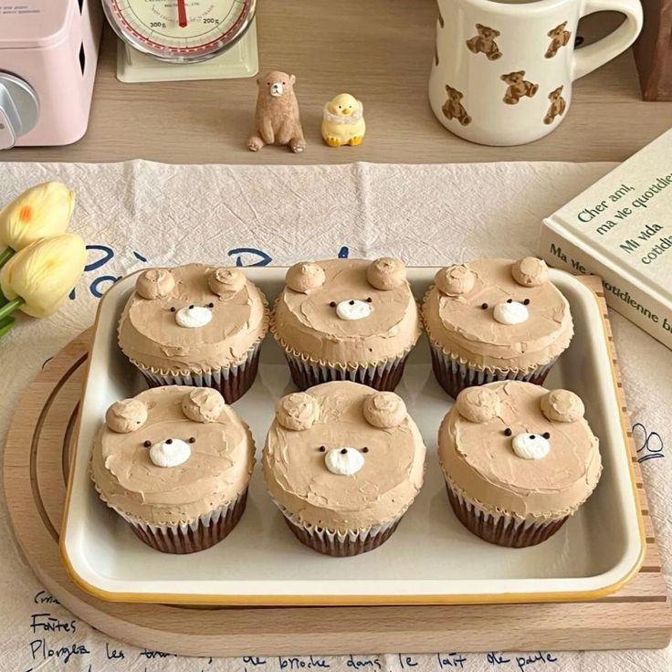

Home
Bear Cupcakes

Description
This is how to make these adorable brown bear cupcakes, equally as yummy as they are cute.
Ingredients
Frosting
- 8 oz mascarpone cheese
- 1/2 cup powdered sugar
- 3 tbsp unsweetened cocoa powder
- 2 cups heavy whipping cream
Cupcakes
- 2 eggs
- 1 cup granulated sugar
- 1+1/2 tsp baking powder
- 1 tsp baking soda
- 1/3 cup cocoa powder
- 1/2 tsp salt
- 1/3 cup vegetable oil
- 1 cup hot coffee
- 2 tsp vanilla extract
Making the Frosting
- Mix mascarpone cheese, powdered sugar, and cocoa powder until well combined.
- Add in heavy whipping cream and beat until light and fluffy.
Making the Cupcakes
- Combine sugar, flour, baking powder, baking soda, cocoa powder, and salt in mixing bowl.
- Add in remaining ingredients and combine well.
- Fill your cupcake liners 2/3 of the way.
- Bake at 350 F for 15-20 mins.